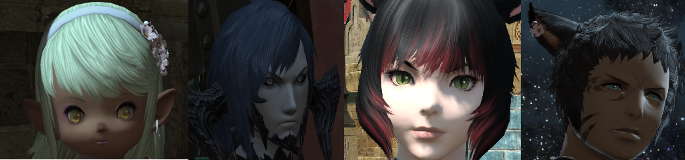
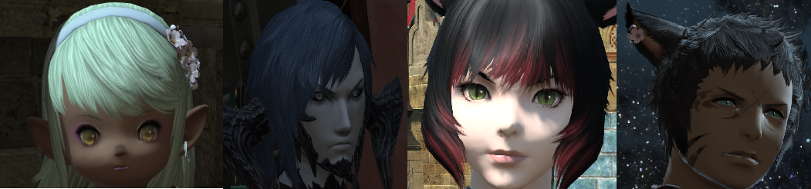

B'razn's Journey

B'razn's Journey

Incredibly powerful since birth, B’razn has needed to repress his immense strength from a young age, leading him to become very gentle and caring. Born the son of Ala Mhigan refugees, his first few summers were spent on the road, his family searching
for a place to live in Eorzea. After his parents, B’rajj Nuhn and M’aria Fhilsi, settled onto a farm in La Noscea, B’razn spent his childhood farming, playing with his sisters, and playing with the various beastmen whose parents B’rajj traded
with.
Things changed for B’razn when he inadvertently fell asleep on a pirate ship, The Banshee’s Cry. Forced to work for the crime of stowing away, he was still elated to be a pirate, and sailed aboard the Cry for several years, before losing
his tail defending a crewmate. No longer able to sail, and after a brief period of training and recovery, he instead turned his eyes towards enlisting in the Maelstrom after the Calamity. After several missions, B’razn’s recklessness killed his
adoptive sister, and later on, the very crewmate he sacrificed his tail for.
Vowing to help whoever he could at any cost, and never to lead again, B’razn resigned from the Maelstrom to become an adventurer. However, this doesn’t seem to make him any money; Being selfless to a fault, he often forgets to collect his
payment, even from the Adventurer’s Guild, and most of his good deeds are started without prompt. If B’razn sees someone who needs help, he helps them, regardless of the price, and in more extreme cases, regardless of the damage it may do to B’razn
himself, much to the chagrin of his current tagalong/dependant, Nanavii Navi, who counts on B’razn to do all the work and provide for her despite her being older than B’razn.